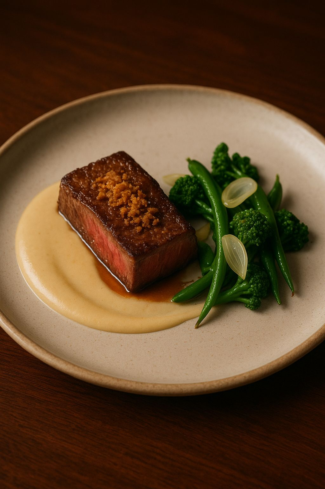
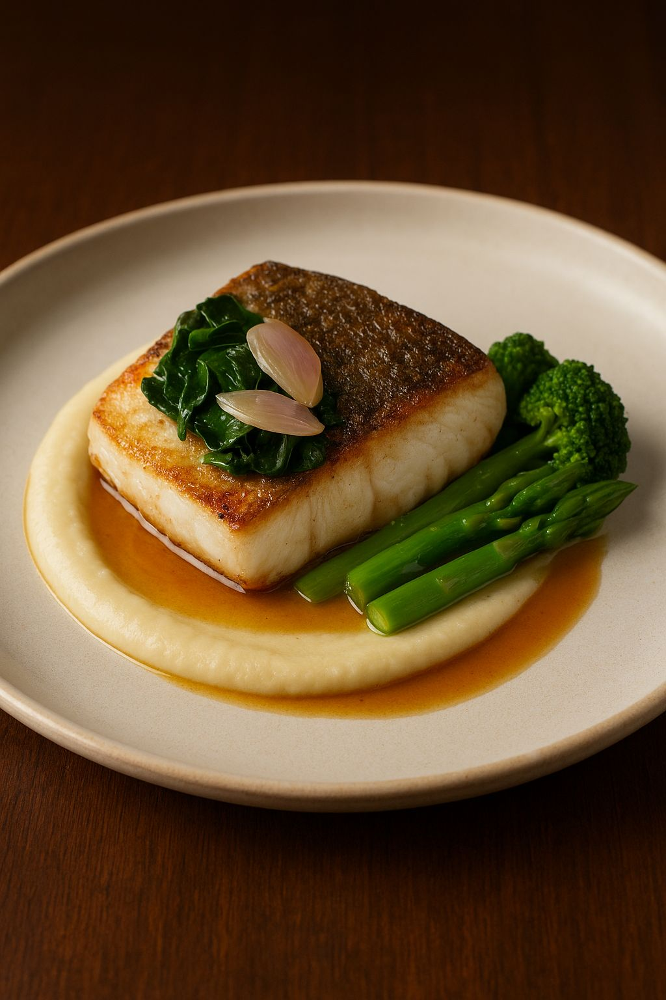
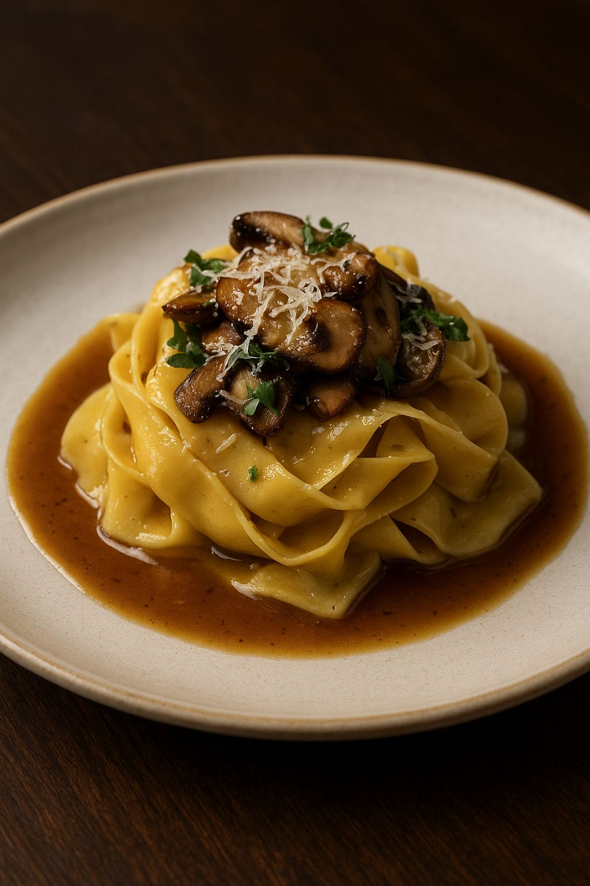
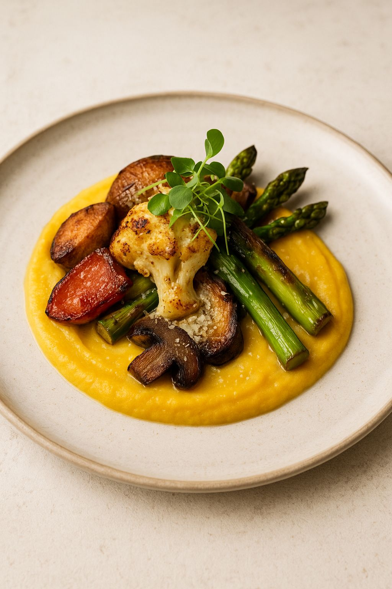
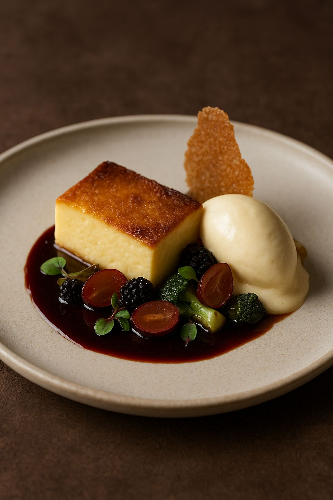

| Filé de carne ao vinho seco |
 |
Esse prato apresenta um corte nobre de carne bovina, selado ao ponto ideal, com interior rosado e
suculento, finalizado com uma crosta leve e crocante de farofa de pão artesanal. A base é um cremoso
purê de raiz suave (como couve-flor ou batata-baroa), que traz textura aveludada e equilíbrio de
sabor. |
R$85 |
| Filé de Cavala |
 |
Esse prato traz um filé de peixe branco delicadamente grelhado, com a pele dourada e crocante,
preservando a suculência e maciez da carne. Ele repousa sobre um purê aveludado de raízes, que
confere cremosidade e sutileza ao conjunto. |
R$75 |
| Spaghetti a Carbonara |
 |
Esse prato apresenta tagliatelle fresco artesanal, cozido al dente e envolto em um cremoso molho de
manteiga e parmesão envelhecido, que garante sabor rico e aveludado. |
R$65 |
| Salada Caesar Vintage |
 |
Esse prato celebra a sofisticação da culinária vegetariana com um purê de abóbora cremoso e
adocicado como base, que contrasta perfeitamente com os sabores intensos dos vegetais. |
R$55 |
| Petit Gateau VIP |
 |
Esse prato apresenta uma sobremesa sofisticada e equilibrada: um cheesecake dourado de textura
cremosa, levemente caramelizado na superfície, servido com uma bola de sorvete artesanal de
baunilha. |
R$30 |